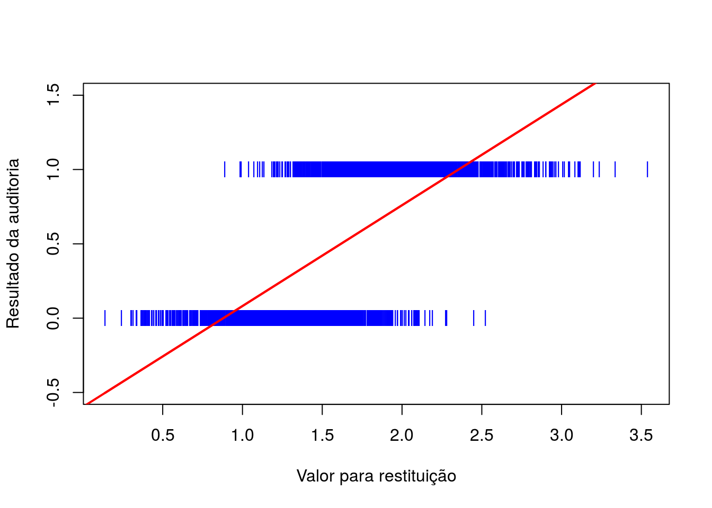
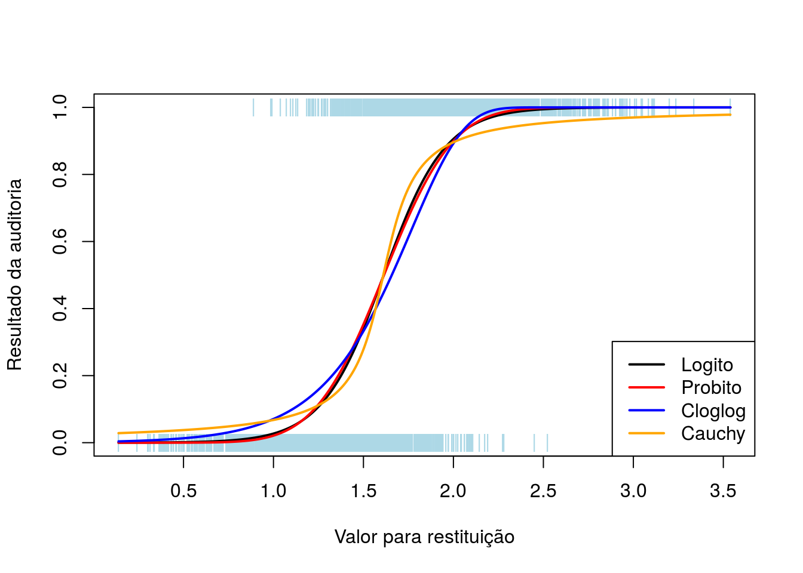

Dados sobre auditoria na prestação de contas de 3000 indivíduos. As variáveis são as segintes: rest: é a restituição financeira solicitada (em milhares de dólares) audit: e a resposta é o resultado da auditoria (1, o valor da restituição estava calculado incorretamente e 0, se estava correto). O objetivo é modelar o resultado da auditoria em função do valor requisitado para restituição.
auditoria <- read.csv2('auditoria.csv')
## Modelo de regressão linear
ajuste <- lm(audit ~ rest, data = auditoria)
# par(las = 1, mar = c(5,4,2,2), cex = 1.4)
plot(audit ~ rest, data = auditoria, pch = "|", ylim = c(-0.5, 1.5), col = 'blue',
xlab = 'Valor para restituição', ylab = 'Resultado da auditoria')
# Aparentemente, prestações de contas com maiores valores requeridos
# estão mais propensas a erros.
abline(coef(ajuste), col = 'red', lwd = 2)
lines(sort(auditoria$rest), fitted(ajuste)[order(auditoria$rest)], col = 'red', lwd = 2)
O modelo ajustado claramente não é apropriado. Observe que para determinados valores da variável explicativa, temos valor ajustado inferior a zero ou superior a 1.
Vamos contornar isso ajustando um modelo com resposta binomial, o que permitirá modelar a probabilidade de uma conta apresentar erros condicional ao valor requerido para restituição. Vamos avaliar diferentes funções de ligação que podem ser usadas na modelagem de dados binários.
## Função de ligação logito
ajuste2 <- glm(audit ~ rest, family = binomial(link = logit), data = auditoria)
summary(ajuste2)##
## Call:
## glm(formula = audit ~ rest, family = binomial(link = logit),
## data = auditoria)
##
## Deviance Residuals:
## Min 1Q Median 3Q Max
## -3.2627 -0.5134 0.0481 0.5265 2.9169
##
## Coefficients:
## Estimate Std. Error z value Pr(>|z|)
## (Intercept) -9.4216 0.3487 -27.02 <2e-16 ***
## rest 5.8420 0.2131 27.42 <2e-16 ***
## ---
## Signif. codes: 0 '***' 0.001 '**' 0.01 '*' 0.05 '.' 0.1 ' ' 1
##
## (Dispersion parameter for binomial family taken to be 1)
##
## Null deviance: 4156.2 on 2999 degrees of freedom
## Residual deviance: 2163.5 on 2998 degrees of freedom
## AIC: 2167.5
##
## Number of Fisher Scoring iterations: 6## Função de ligação probito
ajuste3 <- glm(audit ~ rest, family = binomial(link = probit), data = auditoria)
summary(ajuste3)##
## Call:
## glm(formula = audit ~ rest, family = binomial(link = probit),
## data = auditoria)
##
## Deviance Residuals:
## Min 1Q Median 3Q Max
## -3.6425 -0.5331 0.0114 0.5516 3.1052
##
## Coefficients:
## Estimate Std. Error z value Pr(>|z|)
## (Intercept) -5.3418 0.1783 -29.95 <2e-16 ***
## rest 3.3095 0.1085 30.50 <2e-16 ***
## ---
## Signif. codes: 0 '***' 0.001 '**' 0.01 '*' 0.05 '.' 0.1 ' ' 1
##
## (Dispersion parameter for binomial family taken to be 1)
##
## Null deviance: 4156.2 on 2999 degrees of freedom
## Residual deviance: 2164.7 on 2998 degrees of freedom
## AIC: 2168.7
##
## Number of Fisher Scoring iterations: 6## Função de ligação complemento log-log
ajuste4 <- glm(audit ~ rest, family = binomial(link = cloglog), data = auditoria)## Warning: glm.fit: fitted probabilities numerically 0 or 1 occurred##
## Call:
## glm(formula = audit ~ rest, family = binomial(link = cloglog),
## data = auditoria)
##
## Deviance Residuals:
## Min 1Q Median 3Q Max
## -5.1612 -0.6150 0.0000 0.5971 2.4590
##
## Coefficients:
## Estimate Std. Error z value Pr(>|z|)
## (Intercept) -6.0279 0.2062 -29.23 <2e-16 ***
## rest 3.4154 0.1172 29.14 <2e-16 ***
## ---
## Signif. codes: 0 '***' 0.001 '**' 0.01 '*' 0.05 '.' 0.1 ' ' 1
##
## (Dispersion parameter for binomial family taken to be 1)
##
## Null deviance: 4156.2 on 2999 degrees of freedom
## Residual deviance: 2239.1 on 2998 degrees of freedom
## AIC: 2243.1
##
## Number of Fisher Scoring iterations: 8## Função de ligação Cauchy
ajuste5 <- glm(audit ~ rest, family = binomial(link = cauchit), data = auditoria)
summary(ajuste5)##
## Call:
## glm(formula = audit ~ rest, family = binomial(link = cauchit),
## data = auditoria)
##
## Deviance Residuals:
## Min 1Q Median 3Q Max
## -2.4840 -0.5058 0.2710 0.5092 2.3904
##
## Coefficients:
## Estimate Std. Error z value Pr(>|z|)
## (Intercept) -12.2010 0.7563 -16.13 <2e-16 ***
## rest 7.5763 0.4680 16.19 <2e-16 ***
## ---
## Signif. codes: 0 '***' 0.001 '**' 0.01 '*' 0.05 '.' 0.1 ' ' 1
##
## (Dispersion parameter for binomial family taken to be 1)
##
## Null deviance: 4156.2 on 2999 degrees of freedom
## Residual deviance: 2233.1 on 2998 degrees of freedom
## AIC: 2237.1
##
## Number of Fisher Scoring iterations: 6# par(las = 1, mar = c(5,4,2,2), cex = 1.4)
plot(audit ~ rest, data = auditoria, pch = "|", ylim = c(0,1), col = 'lightblue',
xlab = 'Valor para restituição', ylab = 'Resultado da auditoria')
# Linha da função de ligação logito
lines(sort(auditoria$rest), predict(ajuste2, type = 'response')[order(auditoria$rest)],
col = 'black', lwd = 2)
# Linha da função de ligação probito
lines(sort(auditoria$rest), predict(ajuste3, type = 'response')[order(auditoria$rest)],
col = 'red', lwd = 2)
## Linha da de ligação complemento log-log
lines(sort(auditoria$rest), predict(ajuste4, type = 'response')[order(auditoria$rest)],
col = 'blue', lwd = 2)
# Linha da função de ligação cauchy
lines(sort(auditoria$rest), predict(ajuste5, type = 'response')[order(auditoria$rest)],
col = 'orange', lwd = 2)
legend(x = 'bottomright', lwd = 2, col = c('black', 'red', 'blue', 'orange'),
legend = c('Logito', 'Probito', 'Cloglog', 'Cauchy'))
Aparentemente, os modelos com ligação logito e probito proporcionam melhor ajuste que os demais. Além disso, os ajustes desses dois modelos são bastante semelhantes. Vamos comparar os modelos com base nos respectivos AICs.
## df AIC
## ajuste2 2 2167.462
## ajuste3 2 2168.702
## ajuste4 2 2243.110
## ajuste5 2 2237.070O ajuste 2 (modelo com ligação logito) produziu menor AIC, sendo preferível.